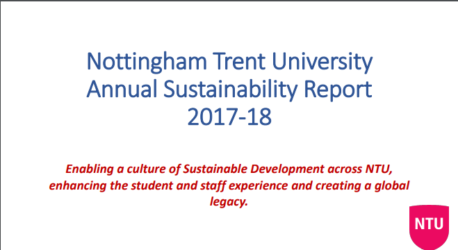
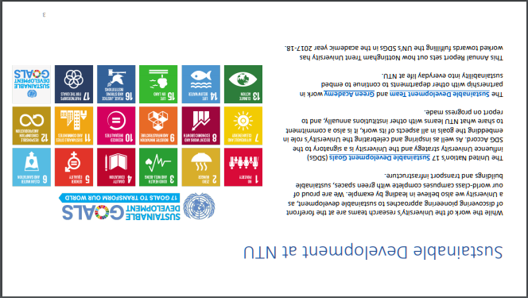
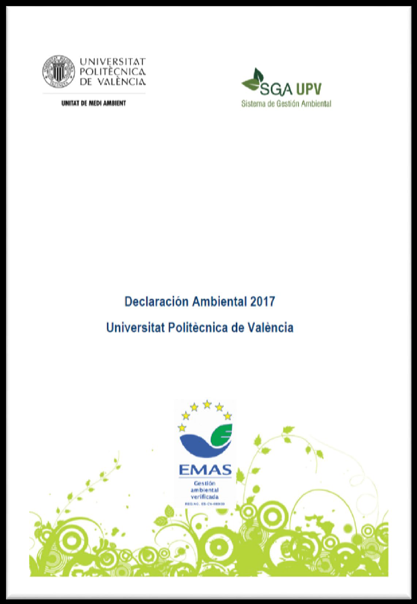

Complete text of Universitat Politècnica de València Environmental Statement Report 2017 available on this link: https://riunet.upv.es/handle/10251/101683
| Sustainability Report Examples & Reference Benchmarks | |
|---|---|
| Nottingham Trent University (UK) Examples | Universitat Politècnica de València (Spain) Examples |
|
  Examples of sustainability report (Nottingham Trent University, UK)
|
 Examples of sustainability report (Universitat Politècnica de València, Spain)
|